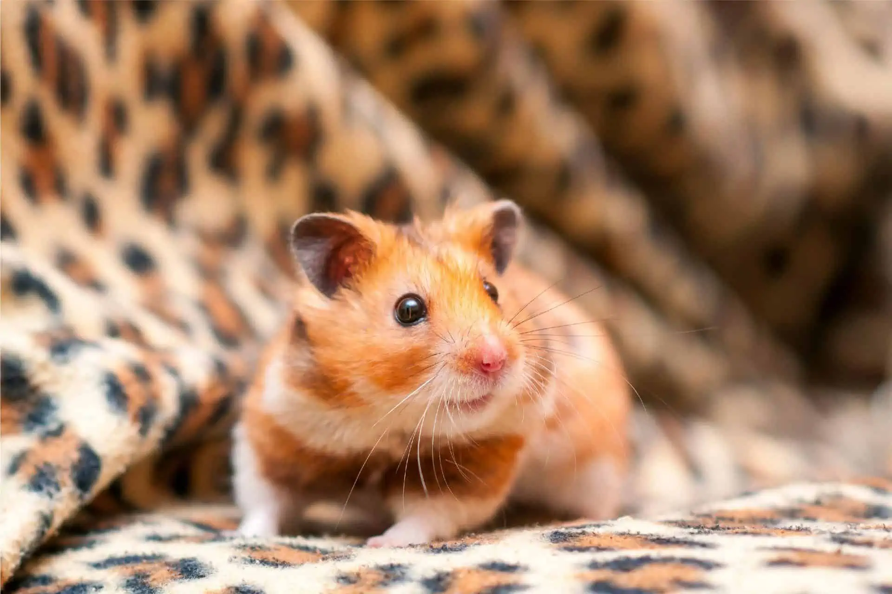
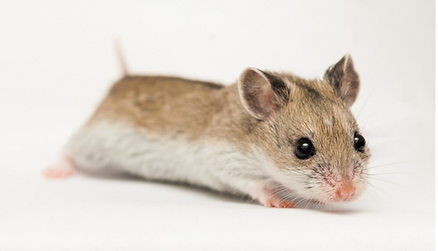
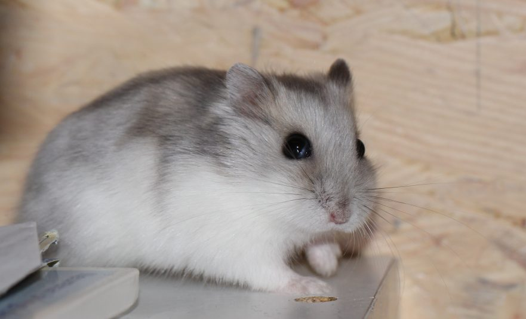
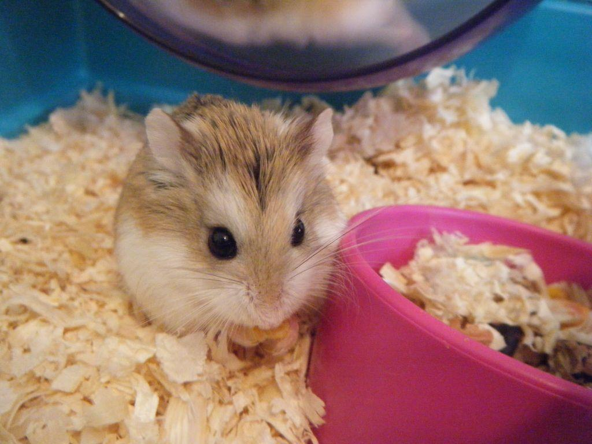

About Hamsters
Hamsters are small rodent animals that live up to 2 to 3 years with the size of 2 to 14 inches in length and 25 to 459 grams in weight. There are 24 species of hamsters and only 5 species are common as a pet namely the Syrian Hamster, Dwarf Roborovski Hamster, Campbell’s Dwarf Russian Hamster, and the Chinese Hamster
Hamster Species




